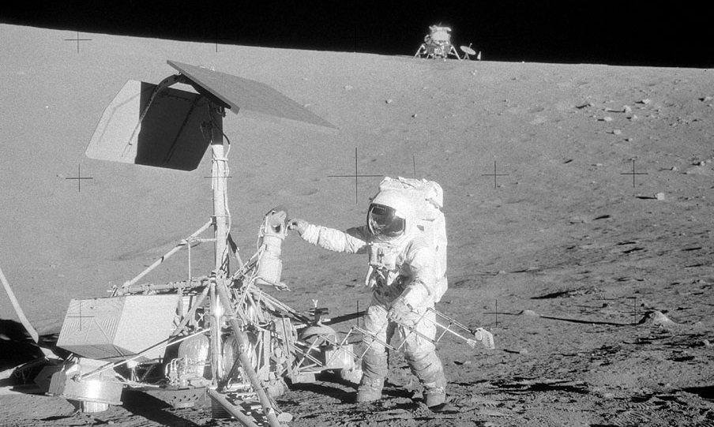

Pouyan is a Persian given name, literally meaning
"dynamic" or "seeker".
Pronunciation: /ˈpuːjɑn/ Other spelling variants: Pooyan, Puyan Transliteration:پویان (Pes),
Пуян (Tgk)
What do 74 and 01001010 mean?
Both 7410 and 10010102 are the
ASCII
values of 'J' (which is the initial of my surname –
Jaberi).
char
bin
oct
dec
hex
P
01010000
120
80
50
J
01001010
112
74
4A
Why is everything dark on this website?
“If you only knew the power of the Dark Side.”
— Darth Vader
“Bravo Six, going dark.”
— Cpt. Price
Because black is my favorite color.
Why the website is designed like this?
To be honest, I barely know anything about UI design and
front-end development since these are not my fields of
expertise. My job is on the server-side.
“We work in the dark to serve the light…”
— Ezio Auditore da Firenze
Even though the design of this website might not be
considered “good”, I am proud of it since I did it – line by
line, from the scratch. However, I was not alone at all. I
would like to thank
Radin Vafaei – who’s a
great web developer and also a fantastic friend – for his
tips, as well as
Fireship
YouTube channel (for teaching me how to create a navbar!),
Font Awesome (for
pretty SVG’s under CC license),
W3Schools (which I
think my endless search queries appeared as DoS attacks to
their servers!), and the helpful community of
Stack Overflow
indeed.
P.S. Seriously, how did they create Stack Overflow without a
Stack Overflow?
P.P.S. Any suggestion (except adding a light theme!) to
improve the looks of my website is welcomed. Dafür do
contact me, please!
What is the background image of this website?
It is a section of
watchdog.c
from the actual source code of GNU/Linux operating system,
written in C language.
A watchdog timer (WDT) is a mechanism to restart the
processing unit of a computer in case of becoming out of
control. During a conventional flow, a system is supposed to
rhythmically reset the timer. However and in the case of a
malfunction, it might fail to do so, resulting in a time-out
for the WDT. In such circumstances, the WDT initiates a
signal to intentionally crash the ongoing flow and restart
the system.
What is with JH dates?
Before anything else, please note that this is a personal
website. Additionally, no version of
my CV on this website is
meant to be used for official purposes (such as job
applications). That being said, I like my website to be how
I desire to be, rather than how it is typically supposed to
be.
Long story short, I trust that the
Gregorian calendar is primarily a religious one and
inappropriate for modern-day use-cases. In contrast, the
Jalali calendar
is just about what could be called a perfect solar calendar
for the needs of the 21stCE century.
Each year of this calendar begins exactly on the spring
equinox, followed by subsequent solstices and equinoxes to
determine the beginning of other seasons as well.
As an acclamation for Persian history, I would like to
utilize a particular variant of this calendar, known as the
Persian Imperial calendar. The origin of this variant
is specified to be the coronation of
Cyrus the Great
which occurred during 559 BCE.
Another calendar that fascinates me is the
Holocene calendar.
It is the same as the Gregorian calendar (which is a
downside!), except for the year which is added by 10,000
The idea is to place the
beginning of the calendar “near” the beginning of the Holocene geological epoch, aiming to cover the
entire written
history of humankind, as well as a significant series of events that led to the rise of the earliest
major human
civilizations.
I like the idea of adding ten thousand years to the calendar. However, I add them to the Persian
Imperial calendar
to create my own "Jalali-grade" recorded-history-covering calender, which I call:
Jalali Holocene calendar.
En: JH = Jalali Holocene Era
De: DH = Dschalali Holozän-Ära
Ru:ДГ = Джалали Голоценовая Эра
Fa:
دوران هولوسین جلالی
=
ه.ج
While on the subject, I should mention that instead of the UTC standard time, I tend to use the
decimal time
system, which divides the day into 10 hours, each hour to 100 minutes and each minute to 100 seconds.
This system makes temporal calculations and computations less sophisticated, and also allows
straightforward interpretation of time as the elapsed fraction/percentage of the day.
Today is a good day!.
What is a public key?
It is a technical term, related to
asymmetric cryptography. You could encrypt any desired message using
my public key
and then sent it to me through any platform since no
individual could ever decrypt it other than whoever
possesses the corresponding private key (supposedly me).
Furthermore, it could be used to validate my digital
signature.
Would you throw a pseudorandom number for no reason?
Did the Apollo moon landings happen?
Yes

AS12-48-7134 (cropped) | JH12528-08-29 | Alan L.
Bean Inspecting Surveyor 3 | Apollo 12 (EVA-2)